The 12 × 14 hex coil board with a driver per coil: every register, bridge, coil lead, bus, the shift chain end to end and the power rails, on the real 14-layer board. Tiled where the board really is periodic, routed in place where it is not.
Every number on this page is read back from the board by
fullreport.sh — KiCad's own DRC, pcbnew's own connectivity, and two checkers for the
shorts no DRC can see. Nothing here is typed in.
| Gate | Result | What it proves |
|---|
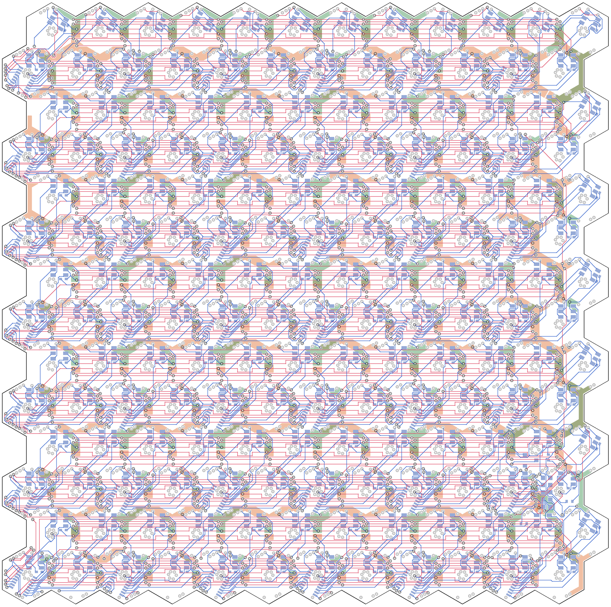
The August stamp was cloned onto all 42 quads and the clone was called clean. It was clean only inside a 6 mm frame the gate was told to ignore.
Measured with pcbnew, quad by quad: only the 20 interior quads take the stamp whole. Every one of the 22 rim quads breaks, for three different reasons:
The stamp itself was also six nets short (18 of 24). Those six had been "proven" unroutable, but every proof froze the other eighteen nets' copper in the order it was laid.
rows = band 6 (north) … 0 (south), columns = quad position west … east
One lattice period of the bare board (16.93 × 14.66 mm) is wrapped onto a torus and all of the quad's
nets are negotiated at once on all 14 copper layers, on a 0.025 mm grid
(gridrouter.mjs, PathFinder-style rip-up and re-route). A net's copper and every periodic image of
every other net are the same grid cells, so "does it tile" is not a check afterwards — it is the shape of the
search space. All 24 nets route, including the six "dead" ones.
Two things are added to the stamp so the board needs no margin spines: each bus net's two lane rows are linked north–south inside the stamp (16 links, riding the winding-layer gutters from ladder barrel to ladder barrel), and two straight east–west lines of In12 are reserved — kept empty — for the shift chain's returns.
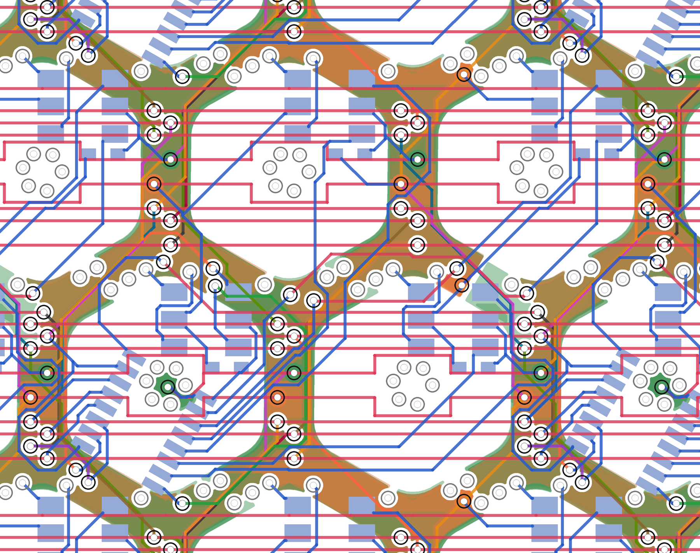
assemble.mjs works on one board-wide grid that the stamp's grid is a period of. A stamp path is
laid on a quad only if every node of it is legal against that quad's real copper and outline, and both of
its ends sit on copper that stays. A path that fails is dropped whole, with everything that hung off it —
never trimmed into a stub.
Each quad is then asked what its pins still need — register → bridge, bridge → coil terminal, pad → bus, lane row → lane row — and exactly that is negotiated in a window around it, against everything already laid. If a quad will not settle, its own patterned paths are ripped up and the whole quad is routed from scratch, together with whatever that opens in finished neighbours.
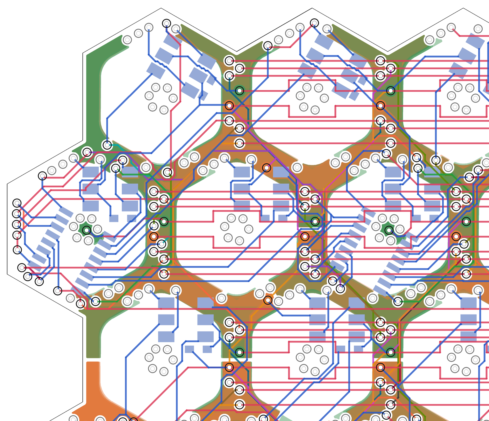
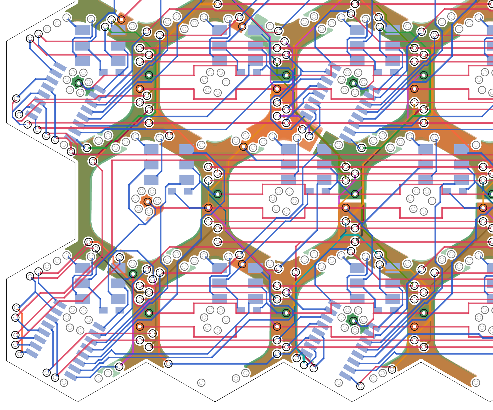
The 42 registers chain west → east in every band, so each band's last register has to reach the next band's first: 95 mm back across the board. Through finished stamps there is no such path on any layer (measured: the router returns "no path"). The stamp therefore reserves two clean In12 lines in the gap between bands; the assembler lays copper on them only where a return runs — one lane per gap for the band-to-band return, and the second lane of the gaps either side of the header for the chain's two ends (DATA_0 out to the first register, DATA_42 back from the last). DATA_42's trunk comes down the east edge from the north-east corner onto its lane before the rim is patched; the last hop from each lane to its pin is negotiated with the rest of that quad.
The 2 × 5 header and the /OE dead-man (two resistors, a capacitor, a FET) are put back on the bare board before routing. The board is dense: only four spots hold the header's pads at ≥ 0.2 mm from every barrel, and each was route-tested: one walls a bridge pad in, the interior one leaves the header's DATA pins no path to their lanes, the east-rim one routes — after its quad is ripped up and routed from scratch.
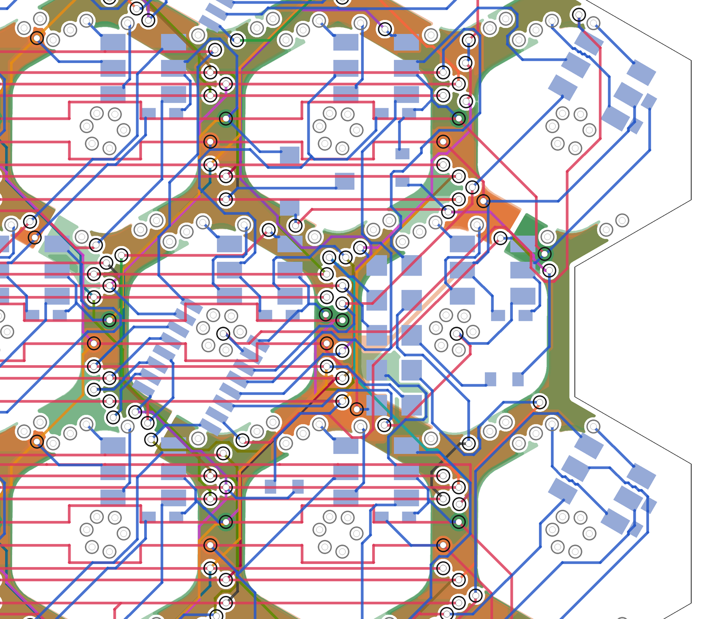
| Board-level net | Result |
|---|
As first routed, every bus lane on this board was a 0.1 mm track, VBUS and GND included, and the header's GND pin reached the mesh through 6 mm of that track and another bridge's pad. Connected, not adequate. No wider lane fits — but the gutter does: 1.7 mm between neighbouring windings on all twelve winding layers, holding nothing but barrels.
Solved on the board file (powercheck.py) | Tracks only (before) | As built |
|---|
powercheck.py turns every VBUS and GND track, barrel, pad and pour cell into a resistor network
(1 oz copper, 20 µm barrel plating), feeds it at the header's two power pins and loads all 168 bridges.
Hover is the simulator's worst-case hover power on the 9 V bus, 0.62 A; the 3 A case is more than a
1.27 mm header pin is rated to carry.
pour.py pours GND on seven layers and VBUS on the other seven, alternating, so the two rails lie on
top of each other. KiCad's own zone filler does it, against the board's own rule files, at 0.12 mm from foreign
copper (the fab minimum is 0.09). The tracks stay; the pour is copper in parallel. Every power barrel standing in a
gutter ties its net's layers together. Nothing is poured over a coil face.
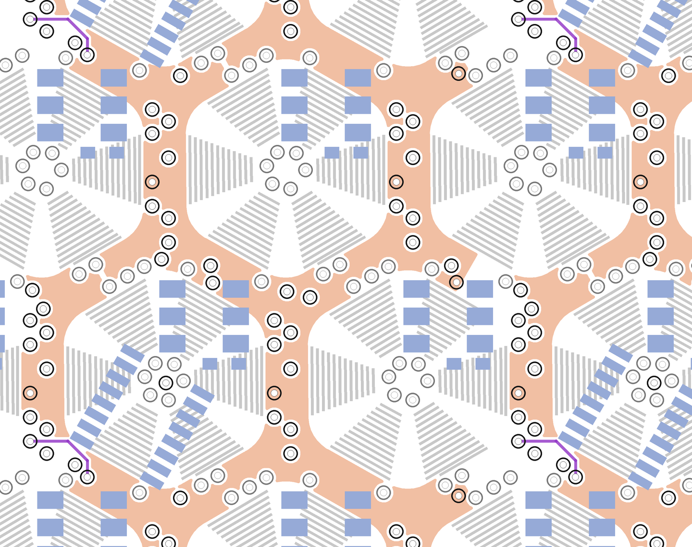
A poured honeycomb is a closed copper ring round every coil on every layer: a shorted turn coupled to a 144-turn winding that is switched at PWM frequency. Estimated from the geometry (ring ≈ 3 mΩ and 16 nH per net, coupling ≈ 0.3), the rings would turn roughly 0.2 to 2 W of PWM ripple into heat at hover, depending on the PWM frequency — against 5.6 W of hover power, and against the few milliwatts the whole rail network dissipates. So the pour is cut. It is first poured whole and solved, the current through each of the 555 gutter flats is read off, and the rails are the maximum spanning tree of that — the arteries the honeycomb was already using. Every flat outside the tree gets one 0.2 mm slit: one per coil, the fewest that leaves no ring. Which flats conduct is decided by the routed board (bus ladders, crossover farms, links riding winding layers), so it is measured, not assumed. The slits are rule areas in the board file, so a refill in KiCad reproduces the tree.
ringcheck.py is the gate: all poured copper, every layer and both nets, projected onto one plane;
the copper-free plane flooded in from outside the board; every coil's winding must be reached.
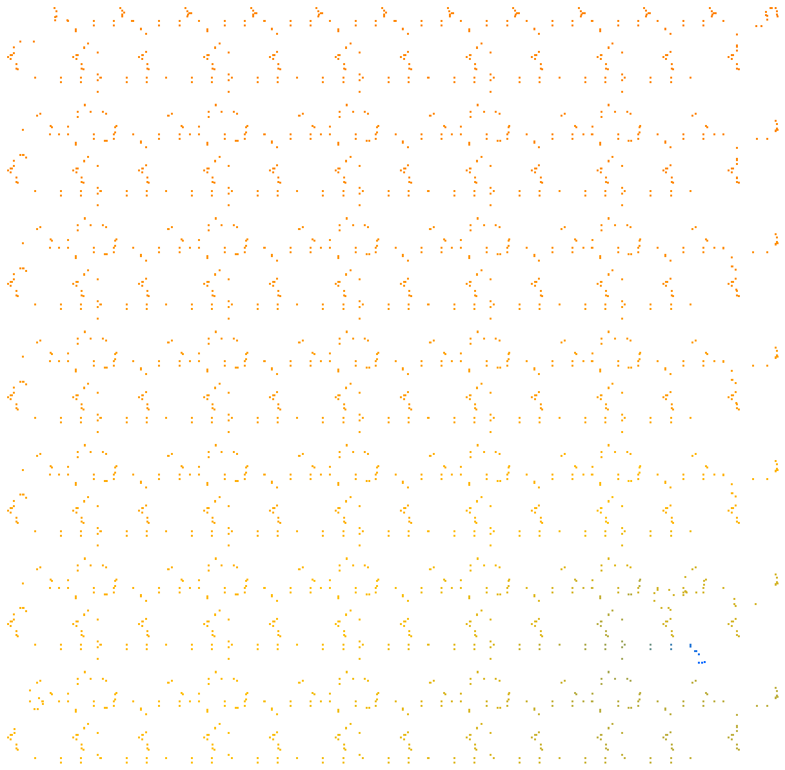
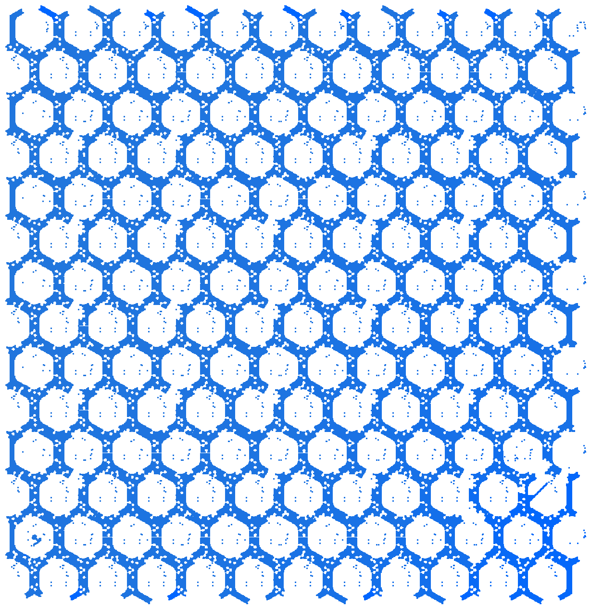
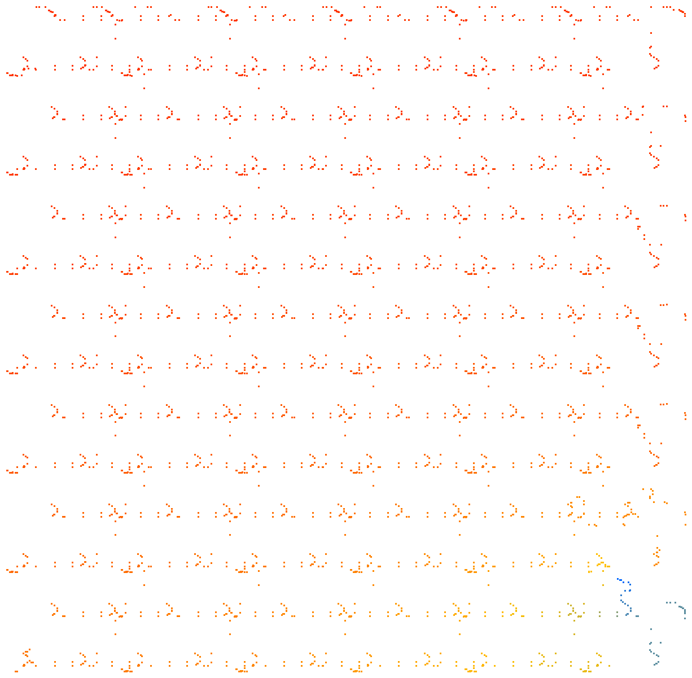
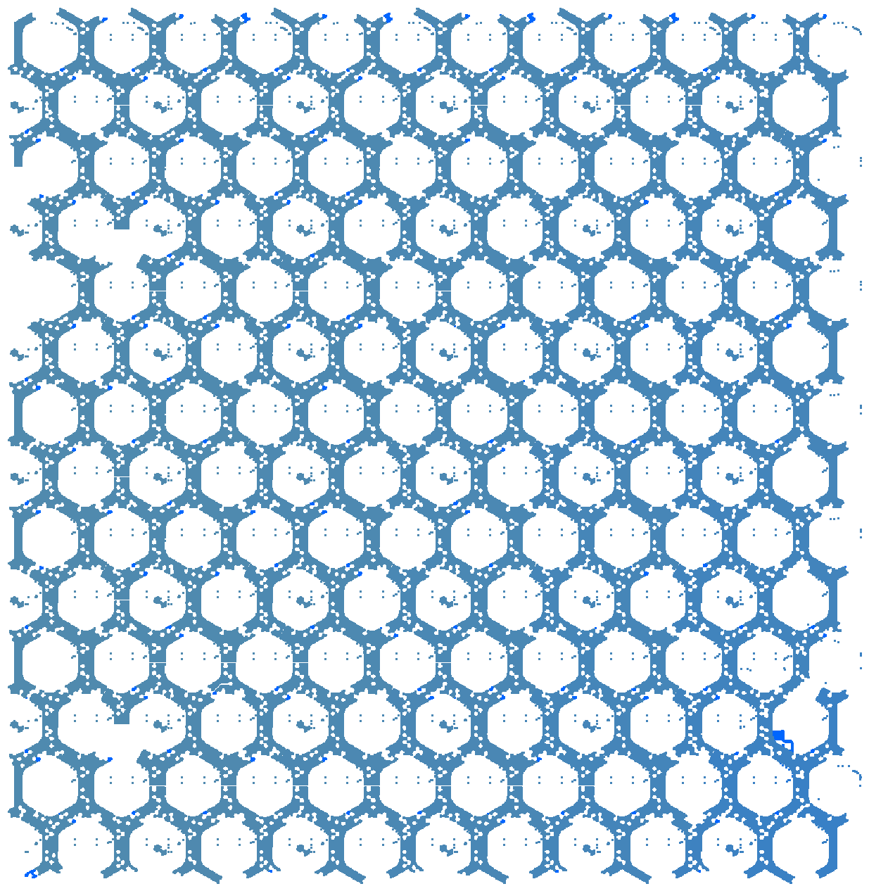
The header's pads sit over a coil face, so the only way into the board is a barrel in the nearest gutter. The router gave the VBUS pin two barrels 0.1 mm away — a B.Cu pour of its own now joins pin and barrels with all the copper that fits — and gave the GND pin one barrel 6 mm away, through a 0.1 mm track and another bridge's pad. That track is still GND's whole feed: 177 A/mm² at hover, the one red line in the table.
service.mjs can place each power pin's own barrels and 0.5 mm copper tabs before routing,
at the nearest sites legal through all fourteen layers (FEED_VIAS). Electrically that is the fix —
every trial measured 12–20 mV at hover and a loop under 150 mΩ — but the header quad does not survive it:
six full route tests (two barrels per pin, one, one on GND only, at either site, and with GND moved to the pin facing
VBUS so both feed from the gutter south of the header) left 2 to 9 connections open every time. A barrel in the seam
west of the header takes one of the crossing slots between ladder barrels that the register's PWM tracks need, and
the quad was already at the edge. So the barrels are off by default, and the feed wants a different header spot or
pinout — a design decision.
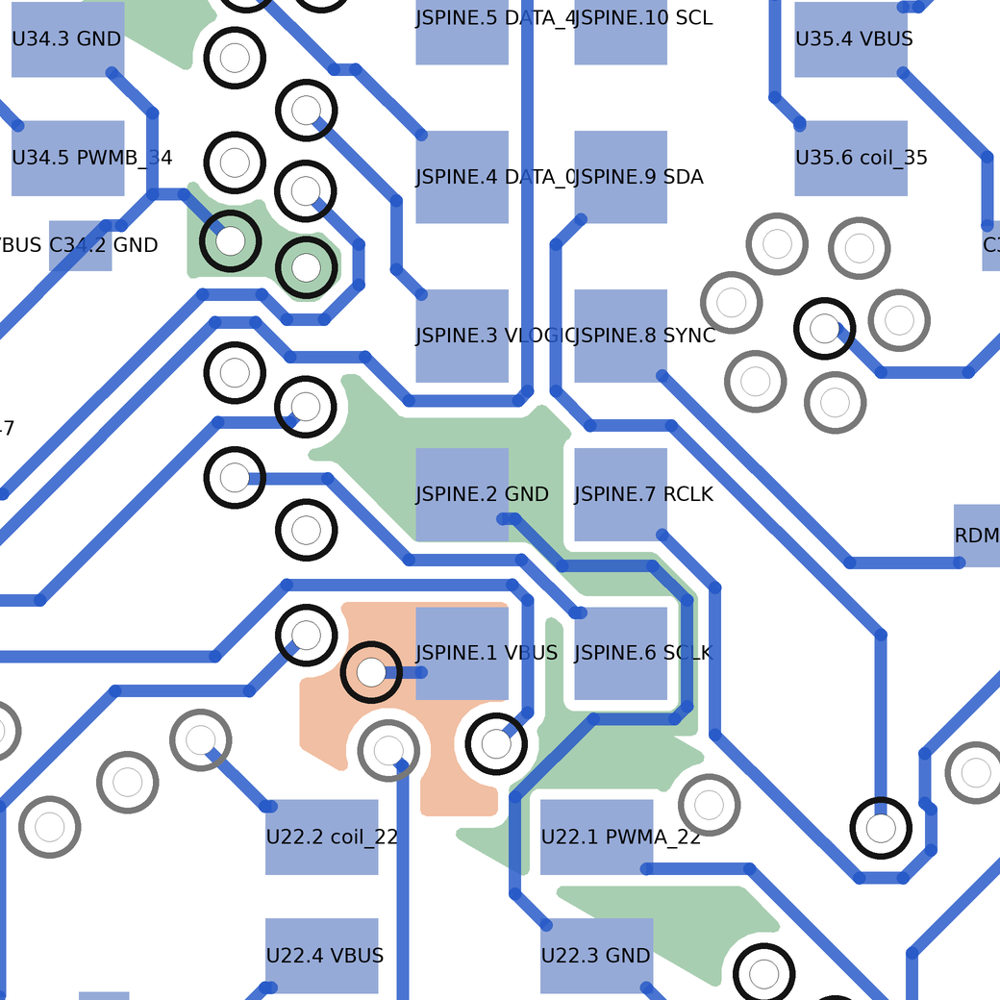
src/kicad.js; nobody has
sent this to a fab's DFM.cd route ./full.sh # stamp (torus) → service parts + power feed → pattern + patch → pour → whole-board gates ./fullreport.sh amzfull # this page's renders and full.json
| File | Role |
|---|---|
| gridrouter.mjs | the negotiated grid router: exact static clearance at the nodes, occupancy discs, torus or window |
| stamp2.mjs | the quad stamp as a torus problem; bus links (MESH), reserved lanes (RESERVE) |
| service.mjs | header + dead-man back on the bare board; feed barrels and tabs at the header's power pins |
| assemble.mjs | pattern → chain ends → patch rim quads → board-level nets → board file |
| t2gate.sh · fullgate.sh | stamp gates · whole-board gates (no rim exemption; hole-to-hole counted) |
| coilleads.py · openlist.py | bridge output ↔ coil terminal check · what is still open, by net |
| pour.py | VBUS/GND poured into the gutters on 14 layers; honeycomb solved, cut to its maximum spanning tree |
| ringcheck.py · powercheck.py | no coil encircled by poured copper · the power copper as a resistor network (loop resistance, drop, current density) |
| render2.py | draws a board window straight from the file |